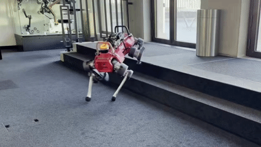
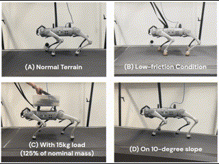
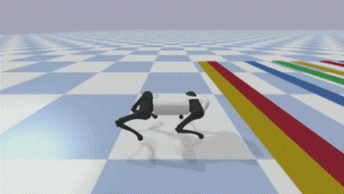
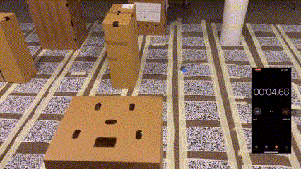

Zewei Zhang
A master's student at EPFL, working on robotics.

I recently got my master’s degree in the Department of Mechanical Engineering at Ecole Polytechnique Fédérale de Lausanne. During my master s study, I have the privilege of conducting the research projects, in Biorobotics Laboratory (BioRob) at EPFL advised by Prof. Auke Jan Ispeert and in Robotics System Laboratory (RSL) at ETH Zurich advised by Prof. Marco Hutter. My research interests lie in the field of robot learning, particularly in locomotion and whole-body control using reinforcement learning. My dream is to create a robot that can help humanity revolutionize the production and explore the universe. Prior to joining EPFL, I completed my bachelor’s degree at Waseda University in Tokyo, Japan, where I focused on space exploration.
During my spare time, I love to play basketball and enjoy the hotpot :).
Publications
 |
A framework for whole-body humanoid locomotion that combines terrain-aware, diffusion-based motion generation with reinforcement learning-based motion tracking. Deployed on a Unitree G1 with onboard perception and computation, the system enables coordinated traversal of boxes, hurdles, stairs, and mixed terrain. |
|  |
A hierarchical reinforcement learning pipeline for perceptive quadruped locomotion learning, which extracts animal motion priors learned from mocap data and generalizes to goal-reaching locomotion tasks on various types of terrains. |
|  |
A framework for the online optimization of the CPG parameters through Bayesian Optimization, which can optimize and rapidly adapt to varying velocity commands and changes in the terrain. |
Selected Course Projects
|  |
A RL-based locomotion controller for quadruped robots integrating central pattern generators with foot sensory feedback, which is capable of walking on uneven terrains in simulation. |
|  |
Develop a navigation system for a quadrotor to maneuver through cluttered environments using onboard sensors. |
 |
A chatbot model generating dialogue responses that possess both persona consistency and contextual coherence. |